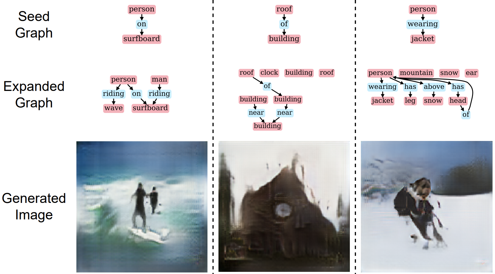
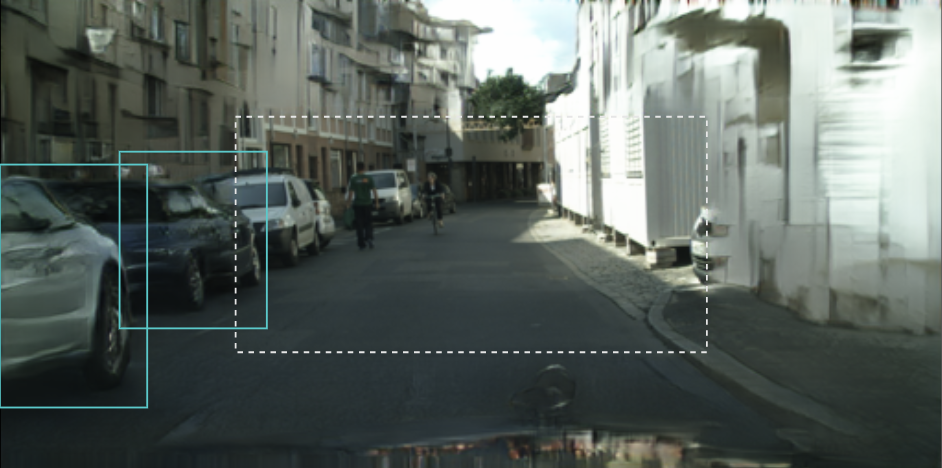
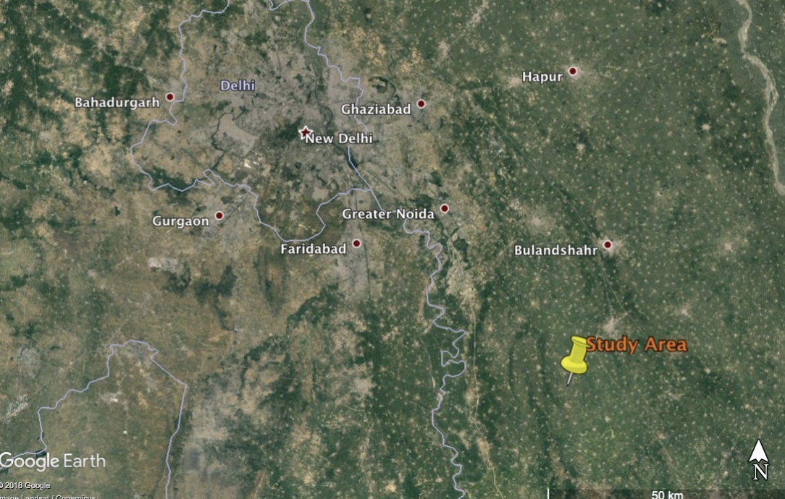

|
| CV | Google Scholar | Github | LinkedIn | |
I am a Research Associate at Adobe Research, India.
My research interest include computer vision and deep learning. My goal is to create automated
AI algorithms for generating (or editing) photorealistic images and videos which are otherwise
impossible to do manually by existing tools, or very time-consuming.
|
{kind=link}

CMU |

Adobe |
Adobe |

IBM |

IIT Roorkee |
|---|
|
|
 |
abstract |
paper |
arXiv |
bibtex
Applications based on image retrieval require editing and associating in intermediate spaces that are representative of the high-level concepts like objects and their relationships rather than dense, pixel-level representations like RGB images or semantic-label maps. We focus on one such representation, scene graphs, and propose a novel scene expansion task where we enrich an input seed graph by adding new nodes (objects) and the corresponding relationships. To this end, we formulate scene graph expansion as a sequential prediction task involving multiple steps of first predicting a new node and then predicting the set of relationships between the newly predicted node and previous nodes in the graph. We propose a sequencing strategy for observed graphs that retains the clustering patterns amongst nodes. In addition, we leverage external knowledge to train our graph generation model, enabling greater generalization of node predictions. Due to the inefficiency of existing maximum mean discrepancy (MMD) based metrics for graph generation problems in evaluating predicted relationships between nodes (objects), we design novel metrics that comprehensively evaluate different aspects of predicted relations. We conduct extensive experiments on Visual Genome and VRD datasets to evaluate the expanded scene graphs using the standard MMD-based metrics and our proposed metrics. We observe that the graphs generated by our method, GEMS, better represent the real distribution of the scene graphs than the baseline methods like GraphRNN.
@misc{https://doi.org/10.48550/arxiv.2207.03729,
doi = {10.48550/ARXIV.2207.03729},
url = {https://arxiv.org/abs/2207.03729},
author = {Agarwal, Rishi and Chandra, Tirupati Saketh and Patil, Vaidehi and Mahapatra, Aniruddha and Kulkarni, Kuldeep and Vinay, Vishwa},
keywords = {Computer Vision and Pattern Recognition (cs.CV), FOS: Computer and information sciences, FOS: Computer and information sciences},
title = {GEMS: Scene Expansion using Generative Models of Graphs},
publisher = {arXiv},
year = {2022},
copyright = {Creative Commons Attribution Non Commercial Share Alike 4.0 International}
}
|
|
webpage |
abstract |
paper |
arXiv |
video |
bibtex
We propose a method to interactively control the animation of fluid elements in still images to generate cinemagraphs. Specifically, we focus on the animation of fluid elements like water, smoke, fire, which have the properties of repeating textures and continuous fluid motion. Taking inspiration from prior works, we represent the motion of such fluid elements in the image in the form of a constant 2D optical flow map. To this end, we allow the user to provide any number of arrow directions and their associated speeds along with a mask of the regions the user wants to animate. The user-provided input arrow directions, their corresponding speed values, and the mask are then converted into a dense flow map representing a constant optical flow map (FD). We observe that FD, obtained using simple exponential operations can closely approximate the plausible motion of elements in the image. We further refine computed dense optical flow map FD using a generative-adversarial network (GAN) to obtain a more realistic flow map. We devise a novel UNet based architecture to autoregressively generate future frames using the refined optical flow map by forward-warping the input image features at different resolutions. We conduct extensive experiments on a publicly available dataset and show that our method is superior to the baselines in terms of qualitative and quantitative metrics. In addition, we show the qualitative animations of the objects in directions that did not exist in the training set and provide a way to synthesize videos that otherwise would not exist in the real world.
@InProceedings{Mahapatra_2022_CVPR,
author = {Mahapatra, Aniruddha and Kulkarni, Kuldeep},
title = {Controllable Animation of Fluid Elements in Still Images},
booktitle = {Proceedings of the IEEE/CVF Conference on Computer Vision and Pattern Recognition (CVPR)},
month = {June},
year = {2022},
pages = {3667-3676}
}
|
|
|
 |
webpage |
abstract |
paper |
arXiv |
bibtex |
video (infinite zooming-out)
We propose a semantically-aware novel paradigm to perform image extrapolation that enables the addition of new object instances. All previous methods are limited in their capability of extrapolation to merely extending the already existing objects in the image. However, our proposed approach focuses not only on (i)extending the already present objects but also on (ii)adding new objects in the extended region based on the context. To this end, for a given image, we first obtain an object segmentation map using a state-of-the-art semantic segmentation method. The, thus, obtained segmentation map is fed into a network to compute the extrapolated semantic segmentation and estimate the corresponding panoptic segmentation maps. The input image and the obtained segmentation maps are further utilized to generate the final extrapolated image. We conduct experiments on Cityscapes and ADE20K-bedroom datasets and show that our method outperforms all baselines in terms of FID, and similarity in object co-occurrence statistics.
@InProceedings{Khurana_2021_ICCV,
author = {Khurana, Bholeshwar and Dash, Soumya Ranjan and Bhatia, Abhishek and Mahapatra, Aniruddha and Singh, Hrituraj and Kulkarni, Kuldeep},
title = {SemIE: Semantically-Aware Image Extrapolation},
booktitle = {Proceedings of the IEEE/CVF International Conference on Computer Vision (ICCV)},
month = {October},
year = {2021},
pages = {14900-14909}
}
|

|
abstract |
paper |
bibtex
We address the problem of domain adaptation (DA) in the context of remote sensing (RS) image classification in this paper. By definition, the problem of unsupervised DA aims at classifying samples from a target domain which is strictly devoid of any label information while assuming that enough training data are available from a related yet non-identical (in terms of data distributions) source domain. A number of existing approaches in this regard are focused towards matching the underlying distributions of the data from both the domains in a shared latent space without explicitly considering: i) the discriminativeness of the embedding space, ii) the usefulness of a manifold distance is pulling the domains towards each other over the standard Euclidean measures. However, we argue the importance of both the aspects in learning the latent space, particularly for fine-grained classes. Our model jointly optimizes both the terms in an end-to-end fashion and the learned latent space is found to properly align the classes with high precision. Experimental results obtained on a hyper-spectral and a multi-spectral dataset confirm the superior performance of the approach over a number of techniques from the literature.
@inproceedings{mahapatra2019unsupervised,
title={Unsupervised Domain Adaptation for Remote Sensing Images Using Metric Learning and Correlation Alignment},
author={Mahapatra, Aniruddha and Banerjee, Biplab},
booktitle={National Conference on Computer Vision, Pattern Recognition, Image Processing, and Graphics},
pages={133--142},
year={2019},
organization={Springer}
}
|
|
 |
abstract |
paper |
bibtex
Real-time monitoring of agricultural crops is an important exercise because of it’s huge impact on agri-business and agricultural policy management. Identification of crops during multiple crop growth stages can help formulate better agricultural policies and management strategies. In this context, the objective of this article is to evaluate the potential of Sentinel1 Synthetic Aperture Radar (SAR) and Sentinel-2 optical imagery in crop classification for an Indian region. A multi-class classification algorithm based on the support vector machine (SVM) is applied to the temporal features extracted from the above mentioned satellite data sets. The experiments are conducted for Kharif and Rabi crop cycles with major crops in the region. The experiments suggest that the joint use of optical and radar imagery results in better classification accuracy compared to using them individually. An overall accuracy of 89% and 96% is obtained for Kharif and Rabi crops, respectively.
@inproceedings{singh2019assessment,
title={Assessment of Sentinel-1 and Sentinel-2 satellite imagery for crop classification in indian region during Kharif and Rabi crop cycles},
author={Singh, Jitendra and Mahapatra, Aniruddha and Basu, Saurav and Banerjee, Biplab},
booktitle={IGARSS 2019-2019 IEEE International Geoscience and Remote Sensing Symposium},
pages={3720--3723},
year={2019},
organization={IEEE}
}
|
|
|
Template from this awesome website. |